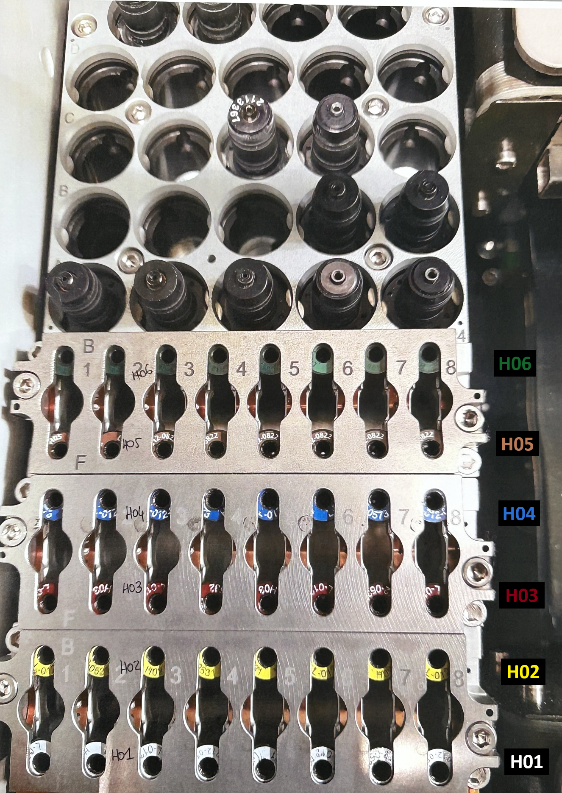

Ce mémo sert d’aide opérateur. En cas de doute, défaut machine, outil abîmé, résistance anormale au démontage/remontage ou consigne différente du responsable, arrêter l’intervention et demander confirmation.